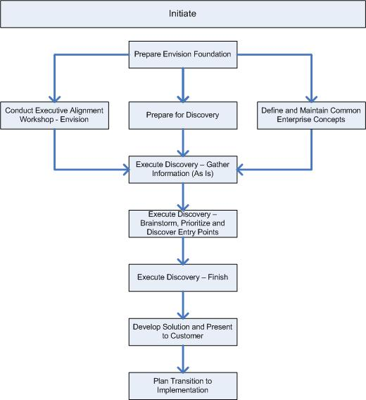

OUM |
Phase Overview |
||
Method Navigation |
Current Page Navigation |
||
|
|
||||||||
During Initiate, you perform a set of foundational tasks. Those tasks have a broad range of objectives and applicability. At one end, delivering a service based on the Envision Roadmap process can establish the vision for one or more projects intended to realize a focused set of business objectives (for example, Roadmap to SOA). On the other end, Initiate phase processes can be used to establish a broad set of enterprise level IT processes that are continued in the Maintain and Evolve phase.
Finally, initiate-based services or sets of tasks may also be performed periodically. These may be required to develop further detail on specific objectives or to respond to critical business needs or pain points that bubble up out of Maintain and Evolve phase tasks.
 This phase overview is written from the perspective of a Full Method View, utilizing ALL of the processes, activities and tasks in this phase. Therefore, all of the following sections provide comprehensive information. If your project is utilizing a tailored approach (for example, Technology Full Lifecycle View, Application Implementation View, Middleware Architecture View), not everything in this overview may be appropriate for your project. Please keep this in mind, especially when reviewing the Prerequisites, Processes, Key Work Products, Tasks and Work Products and Task Dependencies sections. You should use OUM as a guideline for performing all types of information technology projects, but keep in mind that every project is different and that you need to adjust project activities according to each situation. Do not hesitate to add, remove, or rearrange tasks, but be sure to reflect these changes in your estimates and risk management planning. You should also consider the depth to which you address and complete each task based on the characteristics of your particular project or project increment. See Oracle's Full Lifecycle Method for Deploying Oracle-Based Business Solutions for further information on the scalability and adaptability of OUM.
This phase overview is written from the perspective of a Full Method View, utilizing ALL of the processes, activities and tasks in this phase. Therefore, all of the following sections provide comprehensive information. If your project is utilizing a tailored approach (for example, Technology Full Lifecycle View, Application Implementation View, Middleware Architecture View), not everything in this overview may be appropriate for your project. Please keep this in mind, especially when reviewing the Prerequisites, Processes, Key Work Products, Tasks and Work Products and Task Dependencies sections. You should use OUM as a guideline for performing all types of information technology projects, but keep in mind that every project is different and that you need to adjust project activities according to each situation. Do not hesitate to add, remove, or rearrange tasks, but be sure to reflect these changes in your estimates and risk management planning. You should also consider the depth to which you address and complete each task based on the characteristics of your particular project or project increment. See Oracle's Full Lifecycle Method for Deploying Oracle-Based Business Solutions for further information on the scalability and adaptability of OUM.
The following is a list of the objectives of this phase:
The following processes are active in this phase:
This section is not yet available.
This section is not yet available.
Envision includes the following tasks:
| ID | Task | Work Product |
|---|---|---|
Envision Roadmap |
||
ER.010 |
Create Business Case for Envision Enagement | Customer Envision Engagement Strategy |
ER.015 |
Conduct Enterprise Maturity Assessment | Maturity Analysis and Recommendations Report |
ER.020 |
Determine Envision Engagement Strategy | Envision Engagement Strategy |
ER.025 |
Educate Enterprise on Area of Focus | Educated Enterprise |
ER.030 |
Set and Agree on Plan for Envision Engagement | Envision Engagement Plan |
ER.040 |
Research Enterprise | Enterprise Research Findings |
ER.045 |
Establish Executive Sponsorship | Committed Executive Sponsorship |
ER.050 |
Validate and Agree on Envision Engagement Plan | Agreed on Envision Engagement Plan |
ER.070 |
Define Modeling Strategy for the Enterprise | Enterprise Modeling Strategy |
ER.080 |
Obtain Existing Reference Material | Existing Reference Material |
ER.090 |
Conduct Solution Readiness Assessment | Solution Readiness Assessment |
ER.100 |
Define Supplemental Enterprise Requirements | Supplemental Enterprise Requirements |
ER.110.1 |
Perform Benefit Analysis | Benefit Analysis |
ER.110.2 |
Perform Benefit Analysis | Benefit Analysis |
ER.120.1 |
Identify and Mitigate Future State Risks | Future State Risks |
ER.130.1 |
Produce MoSCoW Improvement List | MoSCoW Improvement List |
ER.140 |
Share Product Strategies with Enterprise | Informed Enterprise |
ER.150 |
Review Discovery Findings | Reviewed Discovery Findings |
ER.160 |
Develop Desired Future State | Desired Future State |
ER.165 |
Identify Capability Challenges | Current Capability Challenges |
ER.167 |
Determine Remediation Approaches | Remediation Approaches |
ER.170 |
Develop Future State Transition Plan | Future State Transition Plan |
ER.180 |
Prepare for and Present Solution Recommendation | Solution Recommendations |
ER.190 |
Review Business Feedback and Identify Opportunities | Opportunities Task List |
ER.200 |
Prepare for Transition to Sales or Services | Opportunities Action Plan |
Enterprise Business Analysis |
||
BA.010 |
Identify Business Strategy | Business Strategy |
BA.012 |
Define Business Scope | Business Scope |
BA.015 |
Conduct Enterprise Stakeholder Assessment | Enterprise Stakeholder Inventory |
BA.017.1 |
Determine Metrics Collection and Reporting Strategy | Metrics Collection and Reporting Strategy |
BA.018.1 |
Establish Current Baseline Metrics | Current Baseline Metrics |
BA.020 |
Document Enterprise Organization Structures | Enterprise Organization Structures |
BA.025 |
Determine Operating Model | Validated Operating Model |
BA.030.1 |
Develop Enterprise Glossary | Enterprise Glossary |
BA.040 |
Create Enterprise Function or Process Model | Function or Enterprise Process Model |
BA.045 |
Develop Enterprise Business Context Diagram | Enterprise Business Context Diagram |
BA.050 |
Develop Enterprise Domain Model (Business Entities) | Enterprise Domain Model |
BA.055 |
Develop Enterprise Knowledge Flow | Enterprise Knowledge Flow |
BA.058 |
Develop Business Architecture | Business Architecture |
BA.060.1 |
Perform High-Level Use Case Discovery | High-Level Use Cases |
BA.060.2 |
Perform High-Level Use Case Discovery | High-Level Use Cases |
BA.065 |
Review Busines IT SLA | Business-IT SLA Report |
BA.067 |
Review Business Volumetrics | Business Volumetrics Report |
BA.070 |
Identify Candidate Services | Service Portfolio - Candidate Services |
BA.080 |
Identify Candidate Enterprise Business Rules | Candidate Business Rules |
BA.090 |
Identify Process Improvement Options | Process Improvement Options |
Organizational Change Management |
||
EOCM.010 |
Create and Manage Ad Hoc Communications | Ad Hoc Communications |
EOCM.020 |
Prepare for Executive Alignment Workshop | Executive Alignment Workshop Materials |
EOCM.030 |
Conduct Executive Alignment Workshop | Executive Business Objectives and Governance Rules |
EOCM.040 |
Build and Deploy Sponsorship Program | Sponsorship Program |
EOCM.050 |
Assess Enterprise Change Readiness | Preliminary Enterprise Change Management Assessment |
EOCM.060 |
Prepare Project Team for Enterprise Culture | Prepared Project Team |
EOCM.070 |
Identify Change Agent Structure | Change Agent Structure |
Enterprise Architecture |
||
EA.001 |
Justify and Engage Enterprise Architects | Assigned Enterprise Architect |
EA.002 |
Review External Reference Architectures | External Reference Architectures Review |
EA.010.1 |
Review Architecture Principles, Guidelines and Standards | Architecture Principles, Guidelines and Standards |
EA.030 |
Identify Current Enterprise Architecture | Current Enterprise Architecture |
EA.040 |
Analyze Capabilities | Capabilities Analysis Results |
EA.050 |
Identify Current Architectural Challenges | Current Architectural Challenges |
EA.057 |
Review Business Capacity Plan | Business Capacity Plan |
EA.060 |
Identify Architectural Gaps and Improvement Options | Architectural Gaps and Improvement Options |
EA.065 |
Identify Enterprise IT Strategy | Enterprise IT Strategy |
EA.075 |
Develop Technology Reference Architectures | Technology Reference Architectures |
EA.095 |
Review Enterprise Software Development Process | Enterprise Software Development Process |
EA.110 |
Develop Future State Enterprise Architecture | Future State Enterprise Architecture |
EA.120 |
Develop Information Architecture | Information Architecture |
EA.130 |
Develop Technology Architecture | Technology Architecture |
EA.140 |
Develop Applications Architecture | Applications Architecture |
EA.150 |
Define Transitional Architectures | Transitional Architectures |
EA.160 |
Define Business Rules Implementation Strategy | Business Rules Implementation Strategy |
EA.170 |
Identify Integration Requirements | Integration Requirements |
EA.190 |
Define Product Implementation Prioritization | Product Implementation Prioritization Report |
EA.200 |
Determine Development Framework and Policy Guidelines | Development Framework |
IT Portfolio Management |
||
IP.010 |
Inventory Projects | IT Project Portfolio |
IP.012 |
Inventory Applications | IT Application Portfolio |
IP.014 |
Inventory Services | Service Portfolio |
IP.015 |
Conduct Portfolio Analysis | Portfolio Analysis Report |
IP.020 |
Analyze Services | Service Portfolio - Proposed Services |
IP.025 |
Populate Services Repository | Populated Services Repository |
IP.030 |
Analyze Business Rules | Business Rules Analysis |
IP.040 |
Identify Candidate Projects | Candidate Projects |
IP.050.1 |
Prioritize Projects | Prioritize Projects |
IP.060 |
Develop IT Portfolio Plan | IT Portfolio Plan |
Governance |
||
GV.010 |
Define Governance Strategy | Governance Strategy |
GV.015 |
Review Current Governance Model | Current Governance Model |
GV.020.1 |
Determine Regulatory and Business Mandates | Mandate Matrix |
GV.030.1 |
Discover or Define Policies | Governance Policies Catalog |
GV.040 |
Determine Organizational Impact of Governance | Impact Study and List of Proposed Organizational Changes |
GV.050.1 |
Define Policy Implementation Processes | Policy Implementation Processes |
GV.060.1 |
Define Policy Implementation Tooling | Governance Policy Tooling |
GV.070.1 |
Define Policy Metrics | Measurements Portfolio |
GV.080.1 |
Define Policy Monitoring Processes | Policy Monitoring Processes |
GV.090.1 |
Determine Funding Model | Funding Model |
GV.092 |
Determine Projects Meta Data Description | Projects Meta Data Description |
GV.094 |
Determine Applications Meta Data Description | Applications Meta Data Description |
GV.096 |
Determine Services Meta Data Description | Services Meta Data Description |
GV.098 |
Determine Other Meta Data Descriptions | Other Meta Data Descriptions |
GV.100.1 |
Implement Governance | Governance Implementation |

This section is not yet available.
This section is not yet available.

Copyright © 2006, 2016, Oracle and/or its affiliates. All rights reserved.